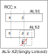
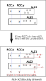

ALS XZ
複数のALSを用いる解析アルゴリズムでは、RCC(Restricted Common Candidate:制限された共通候補）を使います。
ALSとRCCを十分に理解してください。
ここでは、ALS XZの2つのタイプ(Singly Linked、Doubly linked)を示します。
ALSを用いる解析アルゴリズムの特徴として、ALSが利用できる場面では、多くの場合に同時に多数の解が存在します。
また、ALS系の他の解析アルゴリズム解も存在します。ALS XZでもその性質があります。
(1)ALS XZ(Singly Linked)
2つのALSがRCC(数字x)を持つとします。また、RCCとは異なり両ALSに含まれる数字をzとします。
"ALS外で、両ALS内の全てのzと関係する"位置にあるｚは、候補から除外できます。
このzが真だと両方のALSをLockedSetに変えてしまい、両方のALSにRCCが含まれることになるが、これは矛盾です。

(2)ALS XZ(Doubly Linked)
2つのALSが2つのRCC(数字xy)を持つとします。このとき、2つのALSは一体となってLockedSetになります。
- ALS外でRCCと同じhouseに属するRCC数字は、除外できます(以下の図の X,y)。
- それぞれのALSの要素数字はLockedSetになり、同じhouseのALS外の要素は除外できます(以下の図の a,b,c)。

ALS XZの例
 ALS-XZ (Singly Linked)
ALS-XZ (Singly Linked)
ALS1: r2c46 #567
ALS2: r3c24 #156
RCC: #5
 >
ALS-XZ (Singly Linked)
>
ALS-XZ (Singly Linked)
ALS1: r1c59 #469
ALS2: r5c2357 #12369
RCC: #6
 ALS-XZ (Doubly Linked)
ALS-XZ (Doubly Linked)
ALS1: r349c3 #1569
ALS2: r1c3459 #12356
RCC: #15
 ALS-XZ (Doubly Linked)
ALS-XZ (Doubly Linked)
ALS1: r25c7 #289
ALS2: r7c89 r89c7 r9c9 #256789
RCC: #28
2.548...9.9..3..2...7.923.4..8.....2541...6879.....1..4.961.2...8..7..9.7...584.6
.2...783..47.2...13..1....7....38.15...5.4...58.79....6....2..82...8.57..793...6.
87........9.81.65....79...8.....67316..5.1..97124.....3...57....57.48.1........74
.9..4..6.4..15...2..6..91....4....7.36.....15.8....3....82..4..9...34..1.4..8..3.